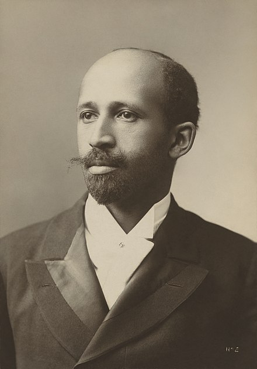

W.E.B. Dubois
W.E.B. Du Bois
Du Bois was a sociologist and among the earliest data scientists. As Battle-Baptiste and Rusert say, his work can be thought of as
the rendering of information in a visual format to help communicate data while also generating new patterns and knoweldge throughout the act of visualization itselt.1
Topics covered
Du Bois was a sociologist who contributed to the field of data visualization through infographics related to the African American in the early twentieth century.
Relevant work
- Rusert, B., and Battle-Baptiste, W. “W. E. B. Du Bois’s Data Portraits: Visualizing Black America”, Princeton Architectural Press, 2018. https://papress.com/products/w-e-b-du-boiss-data-portraits-visualizing-black-america
Outside links
- wikipedia
- TidyTuesday data viz and TidyTuesday challenge provided the data needed to re-create most of Du Bois’s original graphs (his originals were drawn by hand).
- Data Journalism in the study of W.E.B. Du Bois
- W.E.B. Du Bois: retracing his attempt to challenge racism with data
- W.E.B. Du Bois’ Visionary Infographics Come Together for the First Time in Full Color
Other
In 1900 Du Bois contributed approximately 60 data visualizations to an exhibit at the Exposition Universelle in Paris, an exhibit designed to illustrate the progress made by African Americans since the end of slavery (only 37 years prior, in 1863).
At their core, the data visualizations advocate for African American progress. They not only speak to the progress that had been made, but they centered many of the challenges that continued to exist at the time. The set of visualizations demonstrate how powerfully a picture can tell 1000 words, as the information Du Bois used was primarily available from public records (e.g., census and other government reports).
Whitney Battle-Baptiste and Britt Rusert have reproduced and narrated the images from the exhibit in W.E.B. Du Bois’s Data Portraits: Visualizing Black America, the color line at the turn of the twentieth century.
Footnotes
Battle-Baptiste and Rusert, W.E.B. Du Bois’s Data Portraits: Visualizing Black America, the color line at the turn of the twentieth century, 2018, page 8.↩︎